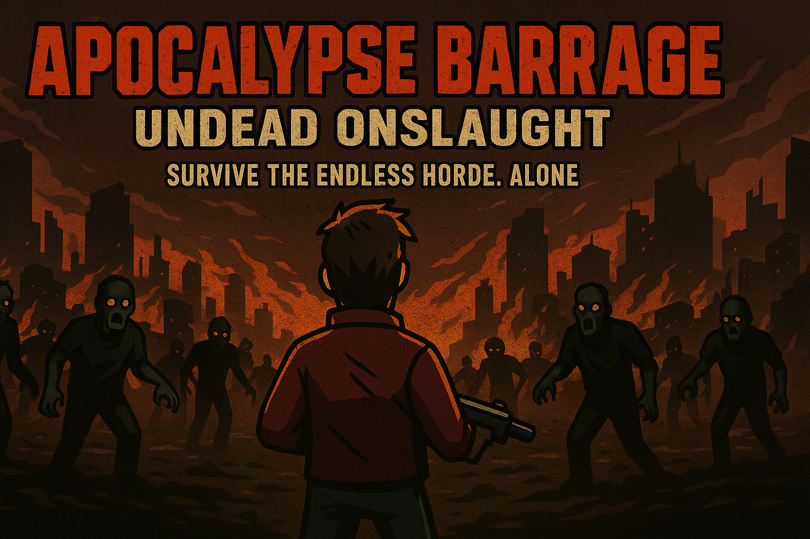

Projects
Apocalypse Barrage: Undead Onslaught
A mobile bullet hell where you fend off endless waves of zombies, using powerful weapons and quick reflexes to survive.
View on GitHubInfected Frontiers
A real-time strategy game where you control a horde of undead to overwhelm humanity. Take command and rewrite the end of the world.
View on GitHubMachine Mania: Online

A 2D fast-paced, multiplayer, side-scrolling race set in a futuristic cyberpunk-esque world.
Gameplay Features
- Real-time multiplayer powered by Photon PUN 2
- Wall-jumping, speed boosts, and platforming hazards
- Cyberpunk environments and audio design
- Strategic pickups and balancing mechanics
Design Documents
Project Links
Work in Progress